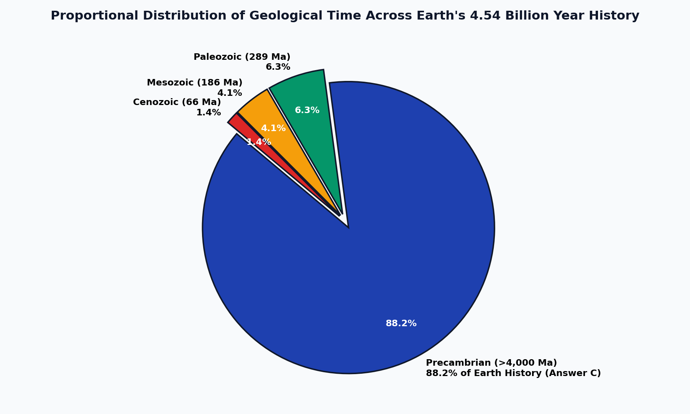
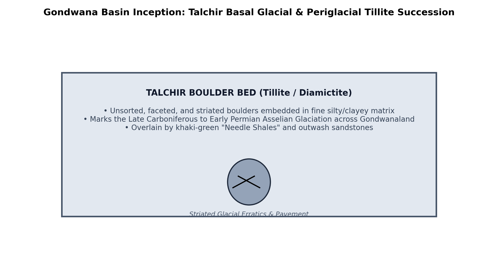
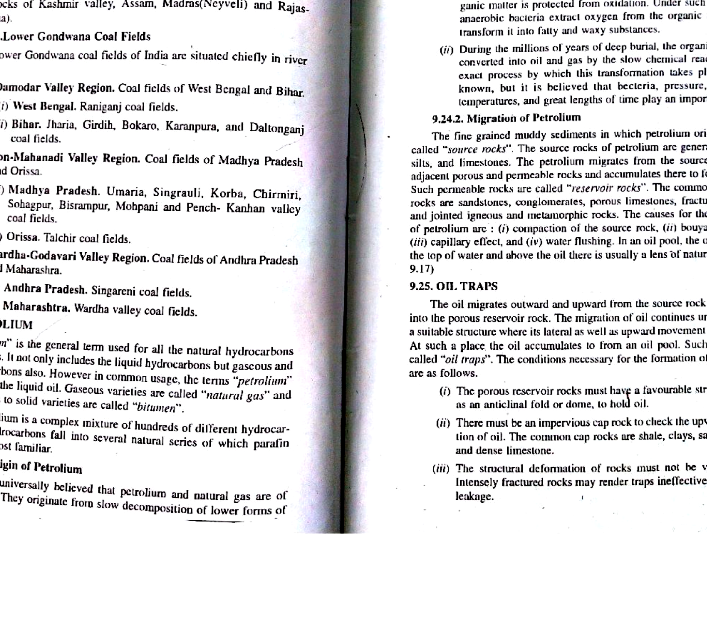
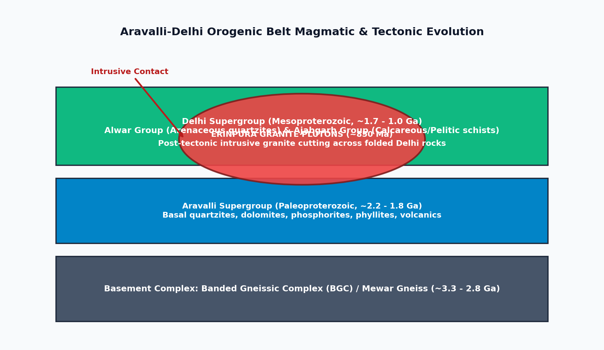

8.1 Fundamental Principles & Geological Time Scale
Stratigraphy is the branch of historical geology that deals with the study of layered (stratified) rocks—their chronological sequence, composition, fossil content, correlation, and mutual structural relationships. The fundamental principles underlying stratigraphical interpretation include:

- Law of Superposition (Steno, 1669): In any undeformed sequence of sedimentary rocks, the oldest layers are deposited at the bottom, and successively younger strata lie at the top.
- Principle of Original Horizontality: Sediments are initially deposited under gravity as essentially horizontal planar sheets. Tilted or folded strata have suffered subsequent tectonic deformation.
- Principle of Faunal Succession (William Smith): Sedimentary strata contain distinct assemblages of fossilized flora and fauna that succeed each other in a definite, unrepeatable vertical chronological order.
- Principle of Cross-Cutting Relationships: Any igneous intrusion or structural fault that cuts across rock strata must be younger than the rocks it cuts.
In Indian stratigraphy, T. H. Holland and D. N. Wadia classified the complete Indian stratigraphical record into four great litho-chronological divisions:
- Aryan Group: Upper Carboniferous to Recent (Gondwana, Deccan Traps, Tertiary, and Quaternary).
- Dravidian Group: Cambrian to Middle Carboniferous (predominantly marine fossiliferous strata preserved in the Extra-Peninsular / Himalayan region).
- Purana Group: Mesoproterozoic to Neoproterozoic unmetamorphosed sedimentary basins resting unconformably on Archean basement (Cuddapah and Vindhyan Supergroups).
- Archean Group: The oldest crystalline basement complexes (>2500 Ma), comprising Peninsular Gneiss, granites, and schists of the Dharwar Supergroup.
| Indian Stratigraphic Division | Global Chronostratigraphic Unit | Typical Indian Formations | Economic & Engineering Importance |
|---|---|---|---|
| Quaternary & Recent | Holocene to Pleistocene | Indo-Gangetic Alluvium, Coastal sands, Laterite caps | Major groundwater aquifers, fertile soil, high foundation settlement |
| Tertiary (Aryan) | Eocene to Pliocene | Siwalik Supergroup, Subathu, Dagshai, Kasauli, Assam Tertiary | Mammalian fossils, petroleum reservoirs (Assam, Gujarat), landslide-prone flysch |
| Deccan Traps | Late Cretaceous to Early Eocene | Plateau basalts of Maharashtra, Malwa, Saurashtra | Road aggregate, building stone, zeolites; challenges with columnar jointing & red boles |
| Gondwana Supergroup | Upper Carboniferous to Lower Cretaceous | Talchir, Damuda (Barakar, Raniganj), Panchet, Mahadeva, Rajmahal | Over 98% of India's bituminous coal reserves, high permeability sandstones |
| Vindhyan Supergroup | Mesoproterozoic to Neoproterozoic | Semri, Kaimur, Rewa, Bhander Groups | High-strength dimensional building stones (Red Fort, Sanchi Stupa), cement limestones, diamonds (Panna) |
| Cuddapah Supergroup | Palaeoproterozoic to Mesoproterozoic | Papaghni, Chitravati, Nallamalai, Kistna Groups | Limestones, quartzites, barite, asbestos, slate, stable bedrock for dams (Srisailam, Nagarjunasagar) |
| Dharwar Supergroup & Archean | Eoarchean to Neoarchean (>2500 Ma) | Peninsular Gneiss, Kolar Schist Belt, Iron Ore Group (Singhbhum, Odisha) | World-class Banded Iron Formations (BIF), gold (Kolar, Hutti), manganese, chromite, massive foundation strength |
8.2 The Archean Complex & Dharwar Supergroup
The Archean basement occupies more than two-thirds of the Indian Peninsula, constituting the rigid crystalline cratonic shield upon which all younger geological formations were deposited. It comprises:

- Peninsular Gneiss: A polyphase granodioritic to tonalitic gneiss complex (3.4 to 2.9 Ga) forming the country rock of South India.
- Fundamental Granite (Closepet Granite): Late-stage potassic granite plutons (2.5 Ga) intruding the older gneisses.
- Dharwar Supergroup: Strongly folded, faulted, and metamorphosed volcano-sedimentary greenstone belts preserved in synclinal troughs across Karnataka and Andhra Pradesh. Subdivided into:
- Sargur Group: Highly metamorphosed ultramafic-amphibolite-pelite enclave belts (>3.0 Ga).
- Bababudan Group: Basal oligomictic conglomerates, basic amygdaloidal volcanics, and major quartz-magnetite/hematite BIF beds.
- Chitradurga Group: Thick flysch-type graywackes, chlorite schists, banded ferruginous cherts, and pillow lavas.
8.3 The Purana Basins: Cuddapah and Vindhyan
The Purana Supergroup marks a protracted period of tectonic stability following the Eparchean unconformity, characterized by intracratonic sag basins receiving thick shallow-marine, deltaic, and fluvial sedimentary piles:

1. The Cuddapah Basin
Exposed in a crescent-shaped basin in Andhra Pradesh, resting with a pronounced angular unconformity upon eroded Archean gneisses. The sequence attains a thickness of over 6,000 meters and is subdivided into four unconformity-bounded groups:
- Papaghni Group: Basal Gulcheru Quartzite and Vempalle Dolomitic Limestone (famous for contact metasomatic chrysotile asbestos and barite veins).
- Chitravati Group: Pulivendla Quartzite and Tadpatri Shales with basic sills and volcanic tuffs.
- Nallamalai Group: Bairenkonda Quartzite and Cumbum Shales/Slates (tightly folded in the eastern concave margin).
- Kistna Group: Irlakonda Quartzite, Kolamnala Shales, and Srisailam Quartzite (forms the massive cap rock at Srisailam dam gorge).
2. The Vindhyan Basin
Covering over 100,000 $\text{km}^2$ across Madhya Pradesh, Rajasthan, and Uttar Pradesh, the Vindhyan Supergroup is an undeformed, nearly horizontal sedimentary sequence exhibiting spectacular ripple marks, mud cracks, and stromatolitic structures. Subdivided into:
- Semri Group (Lower Vindhyan): Marine limestones (Kajrahat, Rohtas), porcellanites, and basal conglomerates. Rohtas limestone is the premier raw material for North India's cement industry.
- Kaimur Group: Thick, uniform, pink-to-buff ortho-quartzites and fine sandstones. Excellent dimension stone.
- Rewa Group: Shales and sandstones containing the diamond-bearing conglomerate horizons of Panna (Madhya Pradesh).
- Bhander Group (Upper Vindhyan): Sirbu Shales, Bhander Limestone, and Upper Bhander Sandstone. Highly prized freestone used to construct historic Indian architectural landmarks (Sanchi Stupa, Red Fort of Delhi, Fatehpur Sikri).
8.4 The Gondwana Supergroup
The Gondwana Supergroup (named by H. B. Medlicott in 1872 after the ancient Kingdom of the Gonds) spans from the Upper Carboniferous to the Lower Cretaceous ($\sim 300\text{ to }100\text{ Ma}$). It was deposited in intracratonic linear fault-bounded rift/graben basins aligned along ancient suture zones:


- Damodar Valley Basin: Raniganj, Jharia, Bokaro, Karanpura (Jharkhand & West Bengal).
- Mahanadi Valley Basin: Talcher, Ib River, Mand-Raigarh (Odisha & Chhattisgarh).
- Pranhita-Godavari Valley Basin: Singareni, Kothagudem (Telangana & Andhra Pradesh).
- Son-Narmada-Satpura Basin: Sohagpur, Umaria, Pench-Kanhan (Madhya Pradesh).

Stratigraphical Succession of Lower Gondwana
- Talchir Formation (Basal Permian): Contains the unstratified Talchir Boulder Bed (tillite/diamictite) with striated, polished facetted pebbles embedded in a fine silt matrix, proving a continent-wide Permo-Carboniferous glacial climate across Gondwanaland. Overlain by khaki-green splintery needle shales and calcareous sandstones.
- Damuda Group (Permian - Chief Coal-Bearing Horizon):
- Barakar Formation: Coarse white felspathic sandstones, carbonaceous shales, and thick bituminous coal seams (e.g., seams I to XVIII of Jharia). Represents meandering river channel-floodplain-swamp cycles.
- Barren Measures (Ironstone Shales): Sideritic and limonitic ironstone nodules embedded in dark carbonaceous shales. Devoid of workable coal seams (hence "barren").
- Raniganj Formation: Fine-grained sandstones, shales, and rich superior-grade coking and non-coking coal seams. Rich in Glossopteris and Gangamopteris flora.
- Panchet Formation (Early Triassic): Micaceous red and green shales and greenish-yellow sandstones. Represents change from humid swamp to semi-arid climate; devoid of coal seams, contains labyrinthodont amphibian and therapsid reptile fossils (Lystrosaurus).

8.5 Deccan Traps (Plateau Basalts)
The Deccan Traps constitute one of the largest Large Igneous Provinces (LIP) on Earth, covering over 500,000 $\text{km}^2$ across Maharashtra, Gujarat, Madhya Pradesh, and parts of Karnataka and Andhra Pradesh. They originated from massive fissure eruptions during the late Cretaceous ($\sim 66\text{ Ma}$) when the Indian continent drifted over the Reunion mantle hotspot during its northward transit across the Indian Ocean.


- Geomorphic Trappean Staircase: Successive sub-horizontal tholeiitic basalt lava flows (10 to 50 meters thick each) cool to form flat-topped step-like plateaus and mesas (from Swedish trappa, meaning steps).
- Inter-trappean Beds: Thin lacustrine, fluviatile, or marshy sedimentary beds (1 to 3 m thick) deposited in fresh-water lakes on the cooled surface of a lava flow before the next eruption. Contain fossil freshwater gastropods (Physa prinsepii), ostracods, charophyte algae, and vertebrate bones.
- Red Boles: Weathered, highly oxidized, clayey baked lateritic soil bands occurring between successive lava sheets. Mechanically weak and plastic when wet; an engineering hazard in slopes and foundations.
8.6 The Tertiary System & Siwalik Group
The Himalayan collision between the Indian and Eurasian plates during the Tertiary gave rise to extensive foreland molasse troughs, into which vast quantities of river sediments were poured from the rising mountain chains:


- Siwalik Supergroup (Middle Miocene to Lower Pleistocene): An 8,000 m thick sub-Himalayan freshwater molasse deposit divided into:
- Lower Siwaliks (Kamlial & Chinji): Hard sandstones and brightly colored red/purple clays. Yield primitive primates (*Ramapithecus*, *Sivapithecus*).
- Middle Siwaliks (Nagri & Dhok Pathan): Thick arkosic salt-and-pepper sandstones and grey clays. Immensely rich mammalian fauna (*Hipparion*, *Stegodon*, *Mastodon*).
- Upper Siwaliks (Tatrot, Pinjor & Boulder Conglomerate): Coarse conglomerates, grits, and loose boulder beds marking final Pleistocene glacial pulse and Himalayan upheaval.
8.7 Visual Atlas: Indian Cratons, Rift Basins & Phanerozoic Stratigraphy
Regional stratigraphic charts covering the Delhi Supergroup, Peninsular Gondwana grabens, Jurassic of Kutch, and Cretaceous of Tiruchirappalli.



- Archean Granites & Charnockites: Ideal, unyielding foundations for mega-gravity dams and underground cavern excavations (e.g., Nagarjunasagar Dam, Sardar Sarovar Dam).
- Purana Limestones & Dolomites: Prone to subsurface karst cavities and solution channels. Require extensive exploratory drilling, pressure washing, and curtain grouting.
- Gondwana Formations: Low compressive strength ($15\text{--}40\text{ MPa}$), high friability, slaking in water, and presence of combustible methane gas in coal tunnels.
- Deccan Trap Basalts: Massive vesicular/amygdaloidal varieties provide excellent foundation rock, but thin red-bole horizons act as slip planes, causing shear failure under heavy arch dam abutments and highway slope failures.
- Siwalik Sandstones & Clays: Young, poorly consolidated, weakly cemented, and sheared by Himalayan thrusts (Main Boundary Thrust - MBT, Himalayan Frontal Thrust - HFT). Cause severe squeeze, swelling, and cave-ins in tunnel alignments.